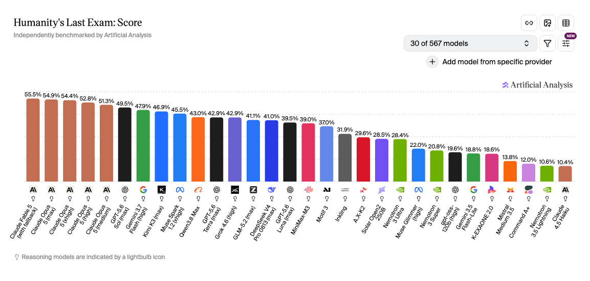

Which AI Is Best?
Reading the Scoreboard Like a Pro
Every AI launch comes with a wall of charts. This hour is about learning to read them: what the tests measure, when a score means something, and when it's marketing.
Scores quoted in this deck were current in July 2026; the whole point of the session is that they won't stay current.
There isn't one AI. There are about ten labs at the front, and they are not tied
Humanity's Last Exam, percentage correct; best-scoring configuration per lab, plus one budget model for contrast. Independently benchmarked by Artificial Analysis, artificialanalysis.ai/evaluations/humanitys-last-exam, accessed 14 August 2026.

30 of 567 models. You are looking at a filtered view. Change the filter and the picture changes.
(max), (high), (medium). Same model, different thinking budget. Claude Opus 5 scores 54.9 on max and 51.3 on medium.
55.5% and 10.4% are the same lab. The gap inside one company is larger than the gap between companies.
Screenshot taken 14 August 2026 from artificialanalysis.ai/evaluations/humanitys-last-exam. The lightbulb marks a reasoning model. Scores on this page will have moved by the time you read this; that is the point.
If you only know one AI by name, read this slide twice
"ChatGPT is the best one"
ChatGPT was first, in November 2022, so it became the household name; the way "to google" means "to search". Famous is not the same as best: on any given month the top of the leaderboards is shared between several labs.
"The free version is the real thing"
Free tiers usually run older, smaller or rate-limited models; the flagship sits behind a subscription. Judging an AI by its free tier in 2026 is judging a restaurant by its vending machine.
"The rankings settle it"
New models ship at a frenetic pace, and 2026 leaderboards often move by only a few percentage points per release. The lead changes hands so often that "the best AI" is a snapshot, not a fact.
"Which AI is best?" has no fixed answer
The lead changes hands constantly
The frontier labs leapfrog each other every few months, and on the biggest human-preference leaderboard the top models are separated by only a handful of rating points. Whoever is "best" today probably wasn't three months ago.
"Best at what, measured how, and when?"
Capability differs by task, scores differ by who ran the test, and everything changes by the month. Answer those three and you can actually choose a model; that's the skill this hour teaches.
The Turing test: "can a machine pass as human?"
One judge, two hidden strangers
In 1950, British mathematician Alan Turing proposed a simple scenario: a judge holds short typed conversations with a hidden computer and a hidden person. If the judge can't reliably tell which is which, the machine passes. It was a thought experiment rather than an exam, but for seventy years it stood as THE test of machine intelligence.
Two numbers from the same year
In an online imitation game played by more than 1.5 million people, players picked the machine correctly only 60% of the time. A coin flip is 50%.
The same generation of models, on simple visual puzzles a person solves nine times in ten. Passing as human and being capable turned out to be different things.
Source: Celeste Biever, "ChatGPT broke the Turing test; the race is on for new ways to assess AI", Nature, vol 619, 27 July 2023.
Speak scoreboard: the jargon, translated
Artificial General Intelligence
AI as broadly capable as a person across most kinds of work. The definition is hotly contested and there's no agreed way to measure it; when someone says AGI is near (or here), ask which definition they're using.
The head-to-head rating
The rating system borrowed from chess: win a matchup, your number rises. Despite the capitals you often see, it's not an acronym; it's named after its inventor, physicist Arpad Elo. It's how Arena turns millions of blind votes into a ranking.
Humanity's Last Exam
2,500 questions written by subject experts across roughly 100 fields; built in 2025 to be the hardest knowledge exam an AI can sit, and named for the hope that we won't need another.
Thinking in shapes and space
Judging positions, rotations and layouts; reading a map, a diagram or a clock face. One of AI's famously jagged spots: gold-medal mathematics alongside 50.1% at reading an analogue clock.
Showing the working
When a model writes out step-by-step reasoning before giving its answer; the "thinking" mode on modern chatbots. It lifts performance on hard problems, at the cost of being slower and dearer.
The model's working memory
How much text a model can hold in mind in one sitting, measured in tokens (word-pieces). Bigger windows are heavily advertised; benchmarks like RULER test how much of the window actually works.
A benchmark is an exam for AI; and there are three kinds
Fixed question sets
Thousands of questions with known answers: graduate science (GPQA), expert questions across 100 fields (HLE), real software bugs to fix (SWE-bench). Scored automatically, so everyone can compare.
Blind human votes
Real people ask a question, see two anonymous answers, and pick the better one; millions of votes become a chess-style rating. Measures what people prefer, not what's correct.
Agents in the wild
Give the model a computer, a terminal or a simulated business and score what it actually achieves: tasks finished, bugs found, money made. The newest and hardest kind.
The industry is shifting its attention from the first kind to the third: from what models know to what they can do.
Capability is jagged: brilliant and clumsy in the same model
Reading an analogue clock
Gold-medal mathematics, and a coin flip on the clock in your nan's kitchen.
Source: Stanford AI Index Report 2026, published April 2026.
Benchmarks saturate in months, not years
Same skill, four generations of exam
Source: each benchmark's official leaderboard as at July 2026; HumanEval (OpenAI, 2021), SWE-bench Verified (Princeton, 2023), SWE-bench Pro (Scale AI, 2025), Terminal-Bench 2.0 (Stanford and Laude Institute, 2025). All linked from the AI Benchmarks resource page.
BrowseComp: 0.6% to about 90% in fifteen months
Source: BrowseComp, released by OpenAI, April 2025; the launch score is from the release paper, the July 2026 figure from the public leaderboard read that month. Linked from the AI Benchmarks resource page.
Vendor scores run higher than independent ones
FrontierMath was the hardest maths benchmark ever built: research-level problems, written in secret by professional mathematicians. Then it emerged that OpenAI had funded its creation, with access to the problems, under an agreement the contributing mathematicians were never told about.
Nobody proved cheating; the model performed impressively anyway. But the episode, disclosed in January 2025, changed the field: Epoch AI now keeps a 50-problem holdout set no lab ever sees, and "who funded the benchmark?" became a standard question. Even the scoreboard needs auditing. A June 2026 audit then found errors in roughly a third of the original problems, now corrected in version 2; even the hardest exam ever written needed marking twice.
Arena: millions of votes, one big caveat
Blind taste-testing for AI
Formerly LMArena: you ask a question, two unnamed models answer, you vote. Millions of votes build a chess-style rating. By mid-2026 the top labs sit within about 25 rating points of each other; genuinely close.
"The Leaderboard Illusion"
A 2025 study documented big labs privately testing many model variants and only publishing the winner, quietly retracting the rest; ranking inflation by selective disclosure. Arena disputed parts and tightened its rules, but the lesson stands.
Researchers at Andon Labs gave AI models $500 and a simulated vending machine business to run for a year: find suppliers, set prices, pay the daily fees, restock. The score is simply how much money is left at the end.
It measures what no exam can: staying coherent over thousands of small decisions. Models have spiralled into ordering nothing for months or hallucinating suppliers; the best run on the July 2026 leaderboard turned $500 into $10,937. And in the multi-agent version, competing AI shopkeepers spontaneously formed a price-fixing cartel; benchmarks find behaviours nobody thought to test for.
Task length doubles about every three months
The research group METR measures the longest task a model finishes at 50% reliability, expressed as how long the same work takes a skilled human. Each step below is one doubling.
Drawn from METR's published figures: a frontier horizon of about 320 minutes in the Time Horizon 1.1 update, 29 January 2026, and a doubling time of about 89 days since 2024. The earlier and later steps are that doubling rate carried backwards and forwards, not separately measured points. Methodology: arxiv.org/abs/2503.14499. Teal is measured territory; ochre is the trend continued one step past it.
Choosing a model? Check the benchmark nearest your task
Arena + HLE
Human preference for everyday quality; HLE and GPQA for hard knowledge work. Close scores at the top mean price and speed can decide.
SWE-bench Pro, Terminal-Bench
The current generation of real-work coding tests. Ignore anything still quoting HumanEval.
OSWorld, tau2, Vending-Bench
Computer use, policy-following customer service, and long-horizon coherence; the closest thing to "will it do my admin?"
FrontierMath, MathArena
Research-level problem solving, plus live competitions that can't have leaked into training data.
Cybench, CyberGym
CTF challenges and real-vulnerability work; the scores labs publish in their own safety cards.
RULER, MRCR
Whether the advertised million-token context window actually works, which is routinely less than claimed.
Spotting a wrapper app in two questions
Thousands of "revolutionary AI" apps are a thin interface over someone else's model, sometimes an older or cheaper one, resold at a premium. The scoreboard is your lie detector:
The word that does all the work is "Sponsored"
Sponsored is the only tell, and it is small, grey and above the fold. Everything else about the two entries is designed to look the same.
The top spot is bought at auction, not earned. Position tells you who paid, not who is real.
The domain is the one thing that cannot be faked. Read it before you click, every time.
Reconstruction of the layout of a Google results page, not a screenshot; the lookalike domain is deliberately not reproduced. The case it is based on is on the next slide.
The "ChatGPT" at the top of Google wasn't ChatGPT
Source: Christophe (YouTube), May 2026 investigation into lookalike AI apps in sponsored search results; Google's 2024 ad-removal figures are from its Ads Safety Report for that year.
Read the scoreboard like a pro
Bookmark the independent scoreboards
The independents
Arena: blind human votes · Epoch AI Benchmarking Hub: trend charts, and who ran each test · Artificial Analysis: one composite index, with cost and speed
The companion catalogue
AI Benchmarks in the Resources library: every benchmark from this session with its leaderboard link, release paper and a status flag telling you whether the score still means anything. Kept up to date as tests retire.
Where this deck's claims come from
Prepared July 2026 for the NT World Ink AI Special Topic Workshops. Scores age quickly; check the linked leaderboards for the current picture.
Christophe (YouTube), May 2026 investigation into lookalike AI apps in sponsored search results · youtube.com/watch?v=uuNCPmd6yU0